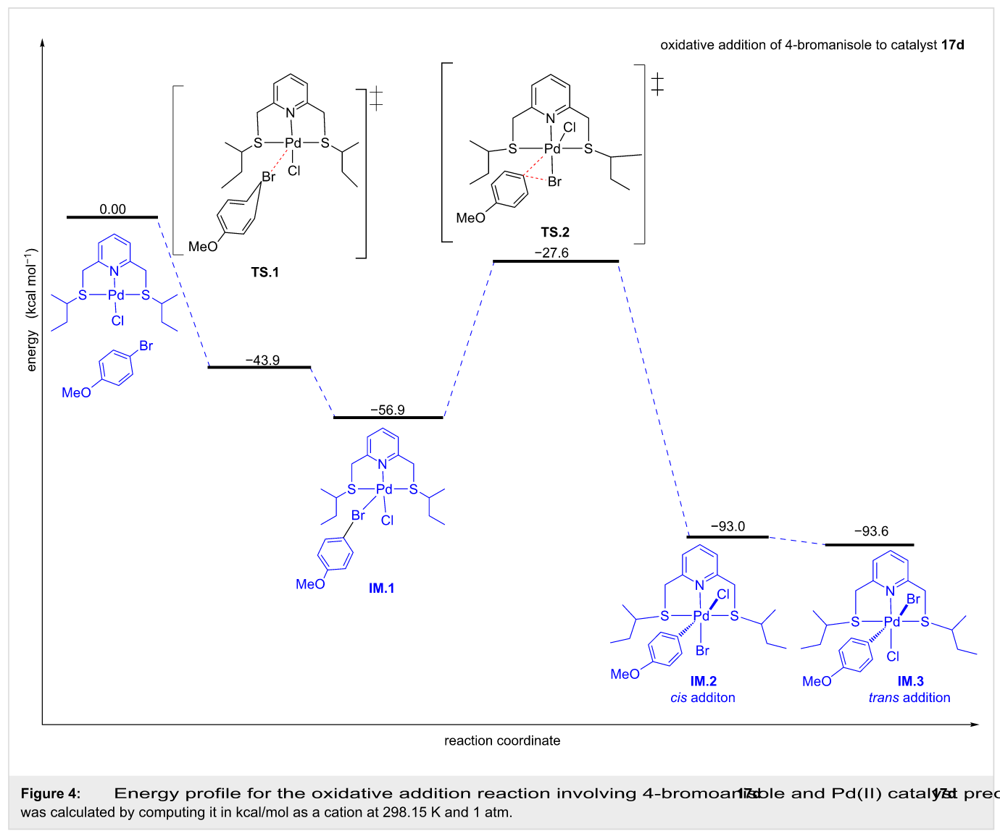

首轮 · 直接 SVG
- 能量数值
- 6/6
- 状态名称
- 5/5
- 状态与能量匹配
- 6/6
- 连接线
- 5/5
其余 4 项指标
- 结构插图
- 6/6
- 已检查 SVG 文本
- 60/60
- 文字越出画布
- 1 处
- 拉伸文字的字形重叠
- 2 处
6 个能量值和对应状态、5 段连线都正确。TS.1 局部键角需要复核。原始盲测 PNG 的图注首行在右侧被裁切。 只去掉图注首行的文字拉伸参数，同一渲染器即可完整输出该行。
能量平台上方和下方有配合物及过渡态结构。两条坐标轴与虚线连接共同表示反应进程。

6 个能量值和对应状态、5 段连线都正确。TS.1 局部键角需要复核。原始盲测 PNG 的图注首行在右侧被裁切。 只去掉图注首行的文字拉伸参数，同一渲染器即可完整输出该行。
沿用盲测 SVG，只移除首行图注的文字拉伸参数。